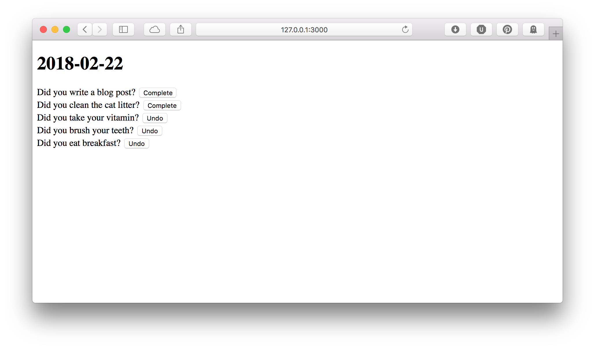
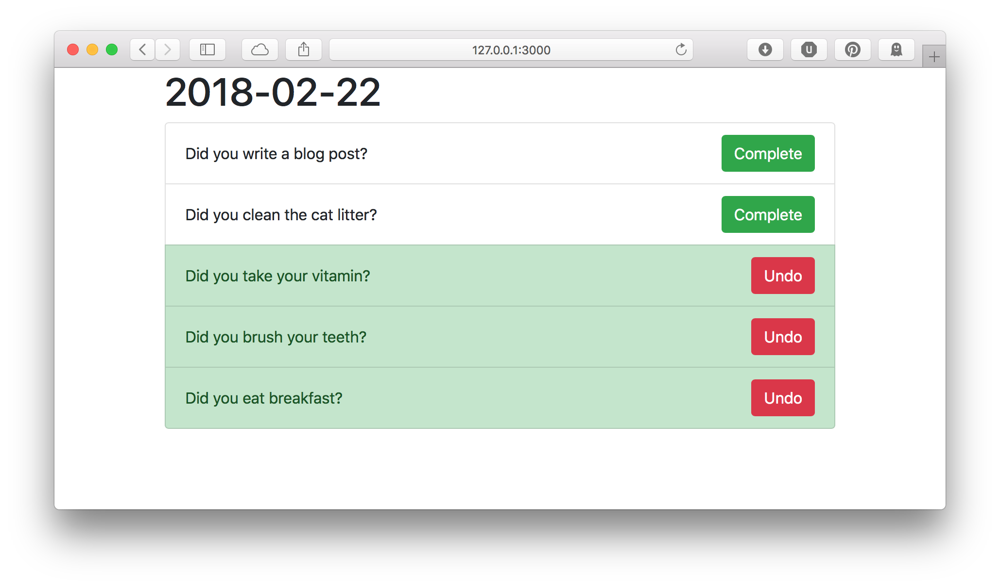

Make it Pretty
Now is a good time to take a break and make this thing look good. To save time,
I use a web design library. A design library contains CSS and JavaScript that
make beautiful and functional components which you can use to build your web
application. There are dozens of good web design libraries out there, but I
generally pick Bootstrap as my go-to.

We can download Bootstrap 4 and add it to our website by placing it in the
public folder. The public folder is for external files that aren't supposed
to be processed as templates. Inside this folder, I like to organize things by
type, so I created a css and a js folder, and moved the Bootstrap files
into the right places. For this project, we only need the CSS files.
$ find public
public
public/css
public/css/bootstrap.min.css
public/css/bootstrap.css
public/css/bootstrap.css.map
public/css/bootstrap.min.css.map
public/js
public/js/bootstrap.js
public/js/bootstrap.min.js
public/js/bootstrap.js.map
public/js/bootstrap.min.js.map
Next, we add Bootstrap to our layout. Remember our layout is shared with all
our templates, so that makes Bootstrap available to all our templates. We will
also put our entire page in a container, which is a class that gives some
padding to make the site look nice on all kinds of web browsers and devices.
@@ layouts/default.html.ep
<!DOCTYPE html>
<html>
<head>
<title><%= title %></title>
<link rel="stylesheet" href="/css/bootstrap.css" />
</head>
<body>
<main class="container">
<%= content %>
</main>
</body>
</html>
Last we make our todo log entries look nice. Remember from our mockup that they took up the full width of the page, the buttons were colored green to complete the item and red to undo, and the background changed to green when the item was completed.
The best Bootstrap component for our log items is called the "list group". For
each item, if the item is complete, we add the class list-group-item-success
to make the entire item have a green background. To make each form take up the
full width of the page, we use Bootstrap's flexbox utility classes: d-flex to
turn it into a flexbox, align-items-center to center vertically, and
justify-content-between to prefer adding space in between the items in the
flexbox (so, the text is on the far left, and the button is on the far right.
Finally, we add the btn-success class to turn the "Complete" button green,
and the btn-danger class to turn the "Undo" button red.
<ul class="list-group">
% for my $item ( @$items ) {
<li class="list-group-item <%= $item->{complete} ? 'list-group-item-success' : '' %>">
%= form_for 'update_log', { log_id => $item->{id} }, ( class => 'd-flex align-items-center justify-content-between' ), begin
<span><%= $item->{title} %></span>
% if ( !$item->{complete} ) {
<button class="btn btn-success" name="complete" value="1">
Complete
</button>
% }
% else {
<button class="btn btn-danger" name="complete" value="0">
Undo
</button>
% }
% end
</li>
% }
</ul>
Our page has changed from this to this

